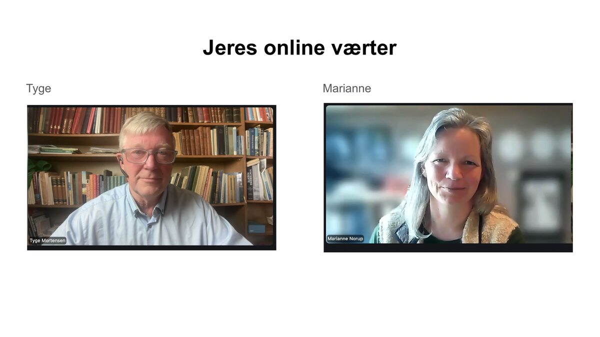

Vi udvælger tre lokalsamfund – ét fra hver landsdel – som får et fuldt faciliteret forløb med støtte fra projektets undervisere. I august starter processen, og inden årets udgang har I en færdig, lokal beredskabsplan.
Beredskabsplanen organiseres i fællesskab – roller, ansvar og struktur lægges fast.
Lokalsamfundet inddeles i zoner. 2–3 zoneledere mobiliseres og kortlægger ressourcer og ressourcepersoner i deres område.
Hele lokalsamfundet inviteres ind. Samlingssteder etableres og samarbejdet med det offentlige beredskab sættes i gang.
Beredskabsplanen færdiggøres og godkendes – klar til brug.
Forløbet bygger på den drejebog der blev præsenteret på de tre fysiske arbejdsmøder i juni 2026. Har du spørgsmål, er du velkommen til at kontakte os.
Kom i gang med det samme. Drejebogen guider jer trin for trin igennem processen med at lave en lokal beredskabsplan – skræddersyet til jeres lokalsamfund.
Download Drejebogen (PDF)11 korte oplæg fra det første online inspirationsmøde 27. april 2026. Download alle slides som PDF

Færdig beredskabsplan, klyngeledere og fælles køkkenvogn.

En kommune sætter lokalt beredskab i gang gennem landsbyforum.

Når en landsby planlægger for seks dage – mad, varme, medicin.

Når global generator-erfaring møder lokal robusthed.

Vejambassadører og handlekraft fra ét stormøde.

Hverken myndighed eller privat – det vi løfter sammen.

Start nært, mikrohandlinger, sneboldeffekten.

Organisationerne bag – fra styrelse til menighedsråd og lokalråd.

Sådan kommer vi igennem kriser nedefra.

En bevægelse fra neden – sammenhængskraft og demokrati.

Hvordan det hele startede – dagsordenen for det første online inspirationsmøde 27. april.
TV-indslag · Beredskabsuge 2026
Beredskabsdirektør Jarl Vagn Hansen fra TrekantBrand mødte borgerne på havnen i Skærbæk på sirenernes testdag.
"Det handler ikke om at skabe frygt, men om at skabe robusthed. Hvis flere er i stand til at tage vare på sig selv og deres nærmeste i en krisesituation, får vi et langt stærkere samlet beredskab."
— Jarl Vagn Hansen, beredskabsdirektør, TrekantBrand
Ifølge Jarl Vagn Hansen er der sket et skifte i måden, vi taler om beredskab på. Tidligere blev det primært opfattet som noget, myndighederne tog sig af. I dag er der en stigende erkendelse af, at borgerne selv skal kunne klare sig i en periode.
Se hele TV-indslaget →"Når lyset slukkes er det fællesskabet der får det tændt igen"
Lokalsamfund der har udviklet en lokal beredskabsplan – klik på kortet eller på kortene nedenfor.

Formand for Skåstrup Lokalråd fortæller om arbejdet med en lokal beredskabsplan.
Færdig beredskabsplan med klyngeledere, hændelsesplan og fælles køkkenvogn.
Når en landsby planlægger for seks dage – mad, varme, medicin.
Kystsamfund nord for Aarhus med lokal beredskabsplan og egen hjemmeside.
Grundejerforening nord for København med lokal beredskabsplan og egen hjemmeside.
Landsby på Broagerland i Sønderborg Kommune – Årets Landsby 2025 med lokal beredskabsplan.

Lokal hjemmeside samler beredskabsplan og ressourcer for frivillige i Køge Nord.
Ekstremvejr & klimatilpasning
Ekstrem varme, skybrud, stormflod og kraftig vind er ikke undtagelser – de er fremtidens virkelighed. Et stærkt lokalt beredskab starter med at forstå, hvad klimaet bringer til netop dit område.
DMI's Klimaatlas samler klimafremskrivninger frem til 2100 for alle danske kommuner. Det giver jer et konkret overblik over, hvad I lokalt kan forvente af:
Brug Klimaatlas som grundlag, når I kortlægger sårbare steder og scenarier i jeres lokale beredskabsplan.
Udforsk DMI Klimaatlas →Lokalt-Beredskab følger vejledningen fra Styrelsen for Samfundssikkerhed (SamSik). Her kan du finde deres officielle materialer og lære mere om, hvordan I kommer i gang.
Grønne Nabofællesskaber har fået støtte fra Styrelsen for Samfundssikkerhed til et forsøgsprojekt til udvikling af en lokal beredskabsplan.
Danmark står over for et stigende behov for lokal robusthed og styrket civilsamfundsdeltagelse i kriseforberedelse. Mange borgere efterspørger en konkret plan og viden om hvad man som lokalt fællesskab kan gøre i tilfælde af krise, ud over husstandens egen prepping og beredskab. En krise kan opstå forårsaget af ekstrem vejr, klimaforandringer, krig, terror.
Styrelsen for Samfundssikkerhed har givet støtte til et forsøgsprojekt, der skal afprøve en metode til udvikling af en lokal beredskabsplan og mobilisering af et lokalsamfund om det. Den skal kunne understøtte tryghed og handlekraft før, under og efter kriser.
Med dette projekt vil Grønne Nabofællesskaber – i samarbejde med Landsbyhøjskolen ved Tyge Mortensen – udvikle og afvikle en række borgervendte kurser efterfuldt af en faciliteret beredskabsproces, der styrker lokalsamfunds evne til at håndtere kriser gennem viden, samarbejde og fælles mobilisering.
Projektet tager direkte afsæt i Styrelsen for Samfundssikkerheds anbefalinger i Forberedt på kriser og specielt vejledningen Lokalt beredskab for beboerforeninger m.v.

Tyge Mortensen er projektleder på initiativet Lokalt Beredskab og en central drivkraft bag udviklingen af projektet. Han arbejder med at styrke lokale fællesskabers evne til at stå sammen og handle i både hverdag og krisesituationer.
Med baggrund som fremtidsforsker og facilitator af lokale processer har Tyge særligt fokus på, hvordan fællesskab, handlekraft og lokalt engagement kan omsættes til konkrete løsninger. Han er initiativtager til Landsbyhøjskolen, hvor læring, fællesskab og lokal udvikling går hånd i hånd. I projektet bidrager Tyge med sin store erfaring og arbejder for at skabe engagement i lokalsamfundet om at opbygge et stærkt og handlingsorienteret beredskab.
Marianne Norup er projektmedarbejder for Grønne Nabofællesskaber og arbejder med at styrke lokale fællesskaber gennem bæredygtige initiativer og konkret handling. I projektet om lokalt beredskab bidrager hun med at skabe engagement, overblik og fremdrift i de lokale processer – med fokus på, hvordan nabofællesskaber kan spille en aktiv rolle i at øge robusthed og sammenhængskraft.
Marianne har erfaring med at facilitere samarbejde og omsætte gode idéer til praksis, så flere kan være med – både der hvor man er i gang og hvor man skal til at tage de første skridt. Hun er optaget af at gøre det enkelt og meningsfuldt at bidrage lokalt, så fællesskabet bliver en styrke i både hverdagen og i krisesituationer.